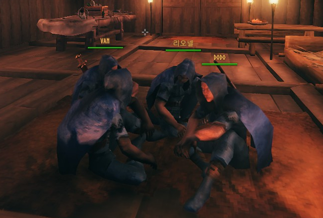

Valheim : Four Warriors
Valheim
북구 신화와 바이킹 문화에 기반한 판타지 세계를 배경으로 펼쳐지는
생존 및 탐험
게임
.
스웨덴의 게임 개발사 Iron Gate AB에서 개발한 오픈 월드 게임이다.

정통판타지 덕후 반야비의 제안으로 시작하게 되었으며, 현재 플레이어는 VAN, 리오넬, DODO, AESIR 4명이다.
VAN
리오넬
DODO
AESIR